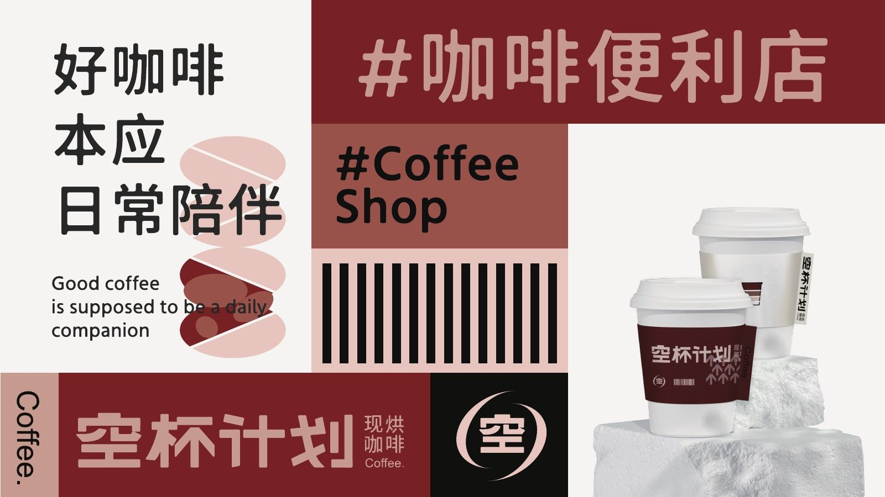
- 年份
- 2023.07
- 品类
- 校园咖啡
- 做了什么
01 / 挑战
人均 15 元，开在食堂里
方案开头先把店定清楚：人均消费 15 元左右，开在学校内和食堂，客群是 18–20 岁的大学生；品牌定位是“物超所值，独特经典风味”，模式是少量座位、以买了带走为主的“快咖啡”。
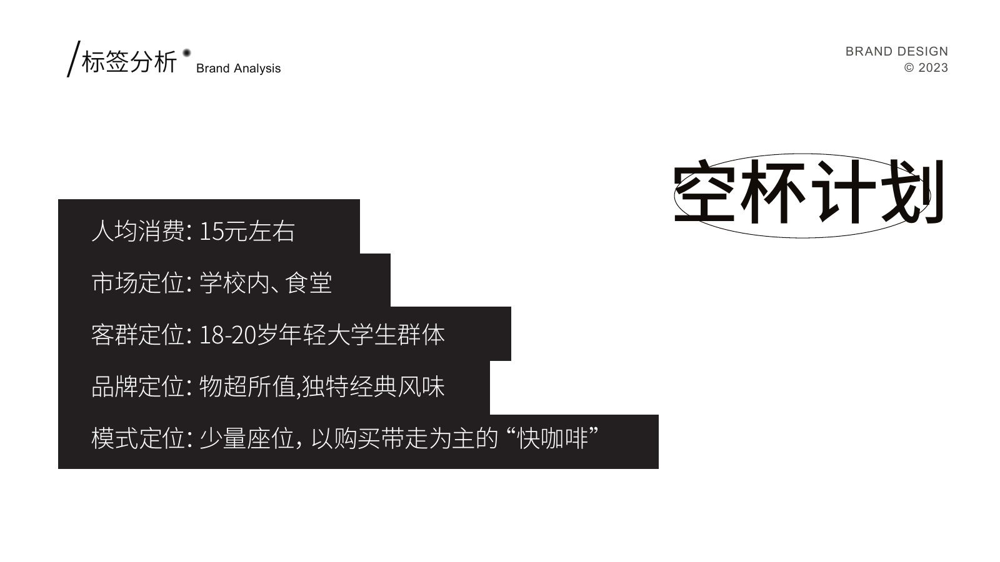
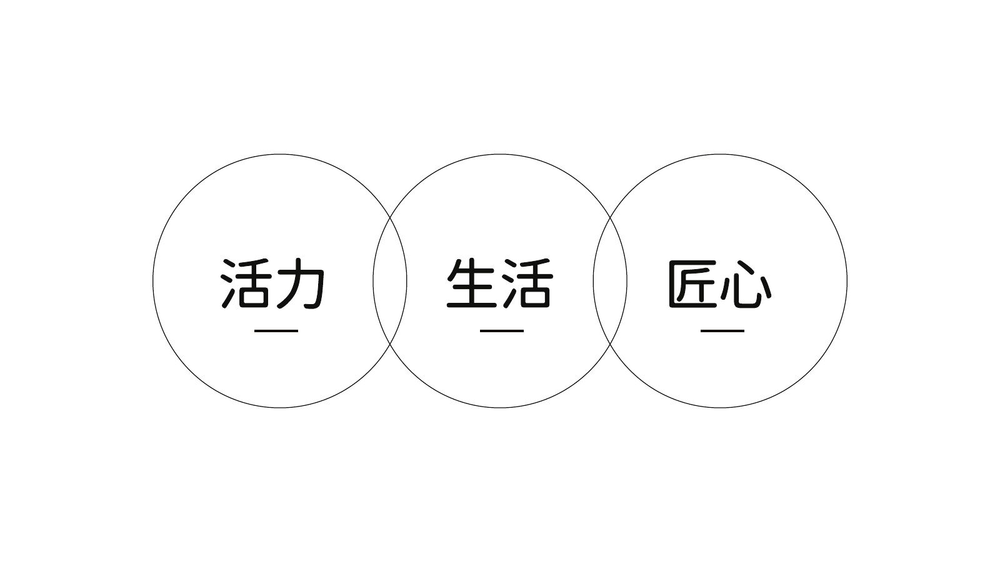
02 / 思路
让每一杯都“空杯”
名字来自咖啡师的心愿：结交爱咖啡、懂咖啡的人，也希望每一杯都被喝到见底。标志图形由满杯、大半杯、小半杯、空杯四种杯量组成，表现一杯咖啡随时间慢慢变空。
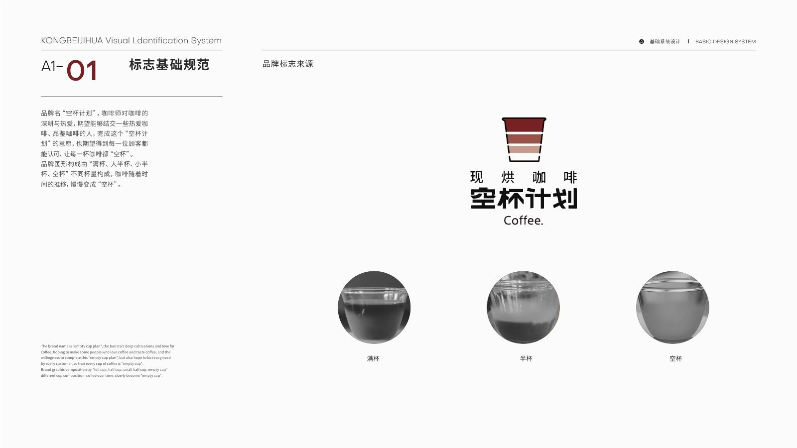
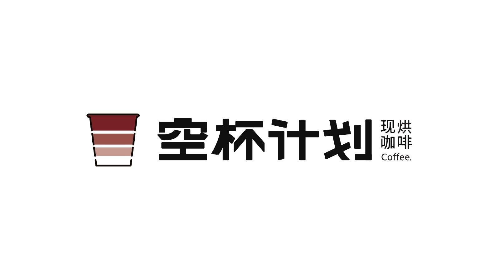
03 / 系统
偏书写的粗字，咖啡里取的颜色
品牌字体偏书写结构，字面较粗、中宫略小、笔画触角圆润，读起来醇厚。色彩取自咖啡豆和咖啡粉：深红、赭红和浅粉。印刷字体用思源黑体和 Objectivity。
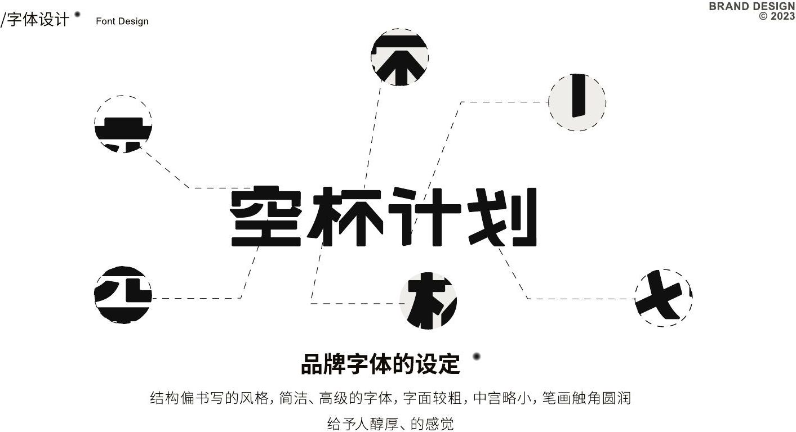
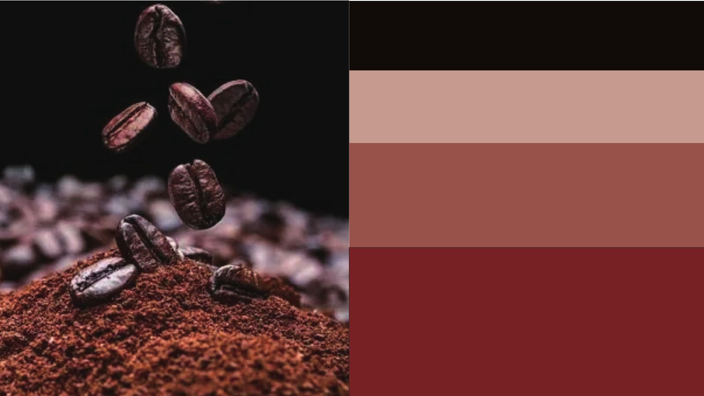
04 / 落地
从一只纸杯到店面招牌
手册逐项给出规格：纸杯、塑杯、单杯/双杯/四杯外卖袋、封口贴、胸牌和工号牌、书签、店内用笔、帆布袋、店面招牌和入口门牌、立地广告牌、X 展架、点餐单、雨伞、围裙、赠饮券和纸巾。
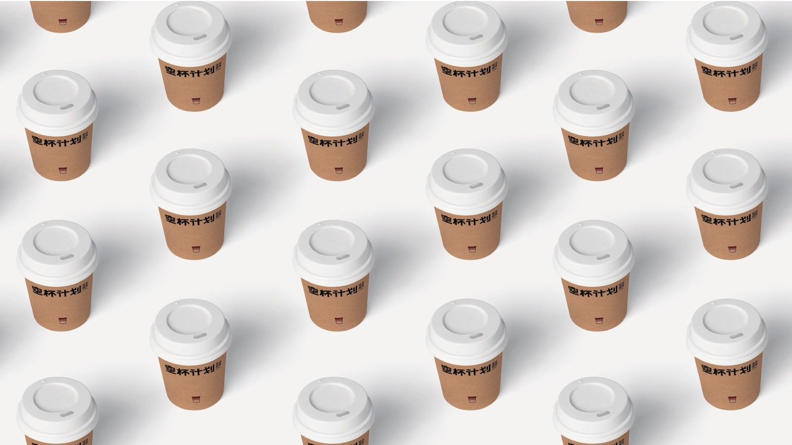
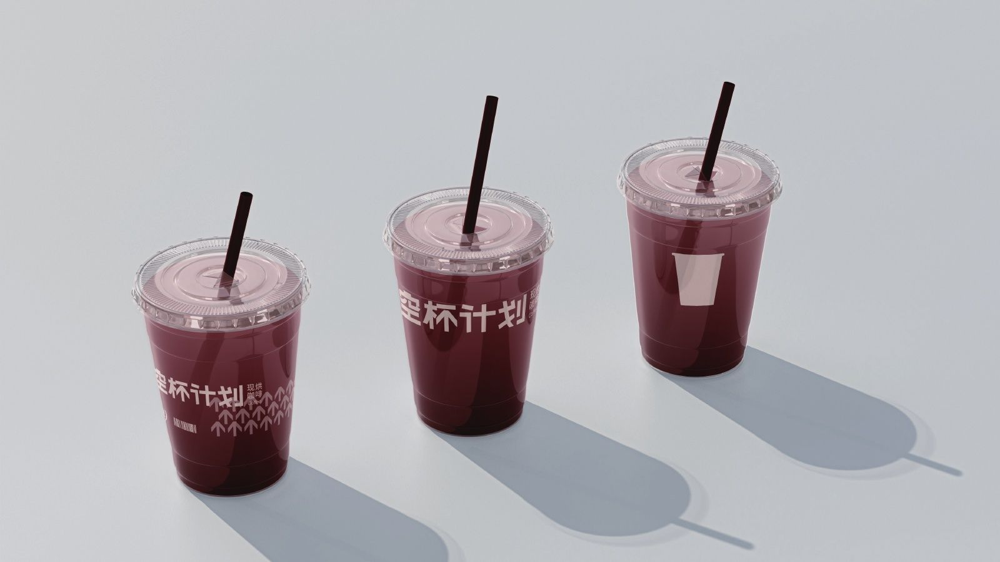
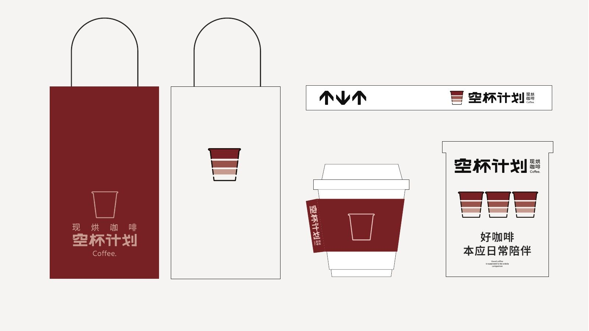
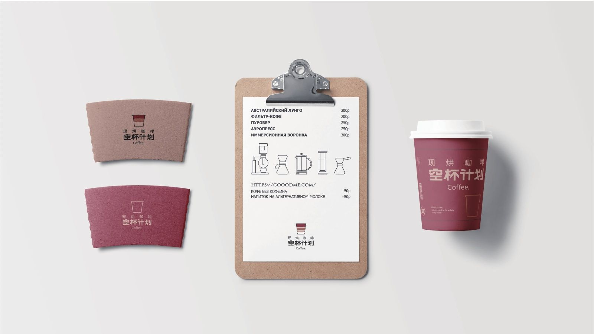
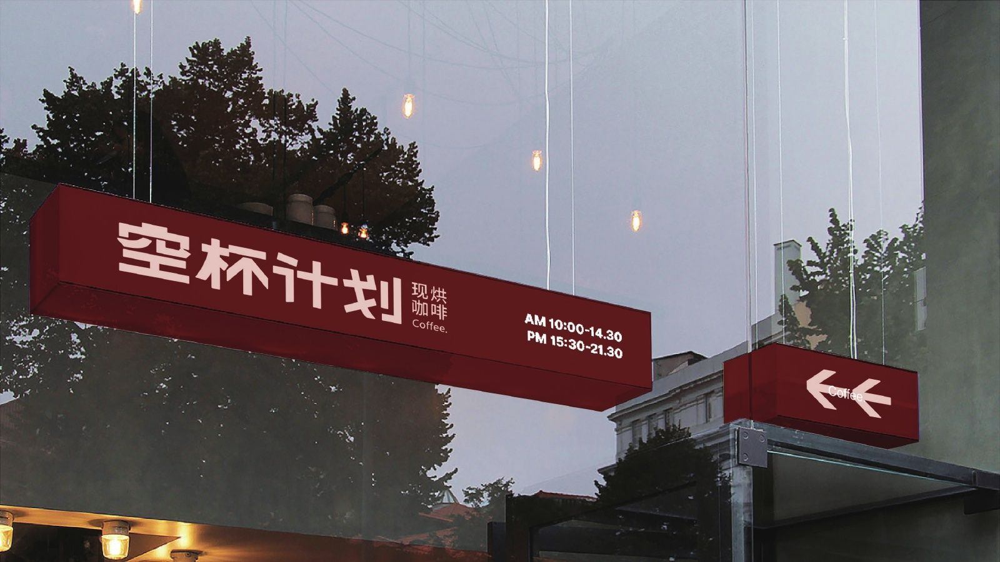
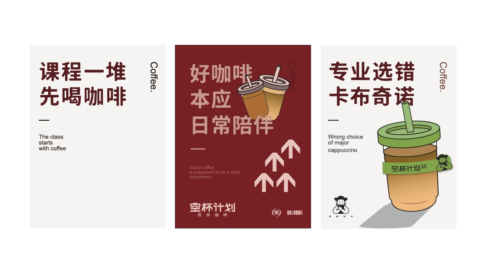